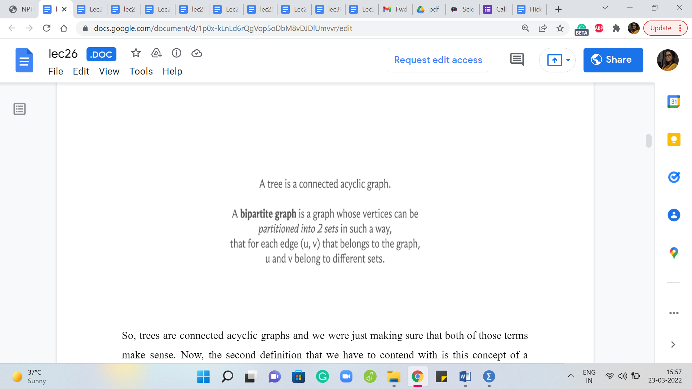
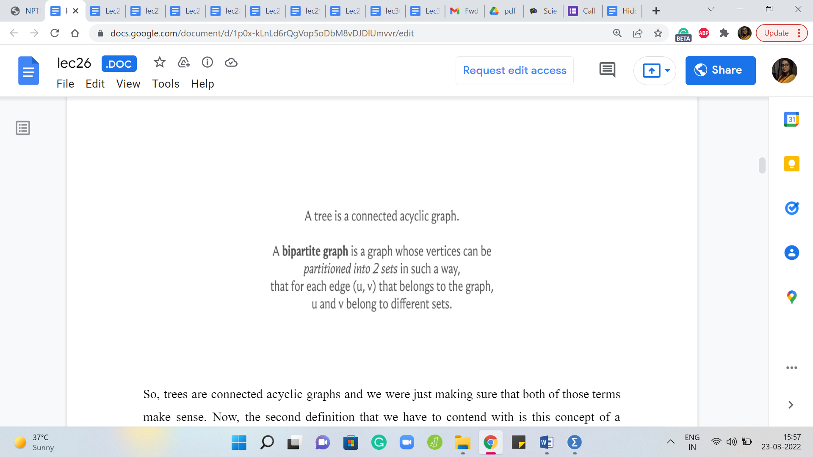
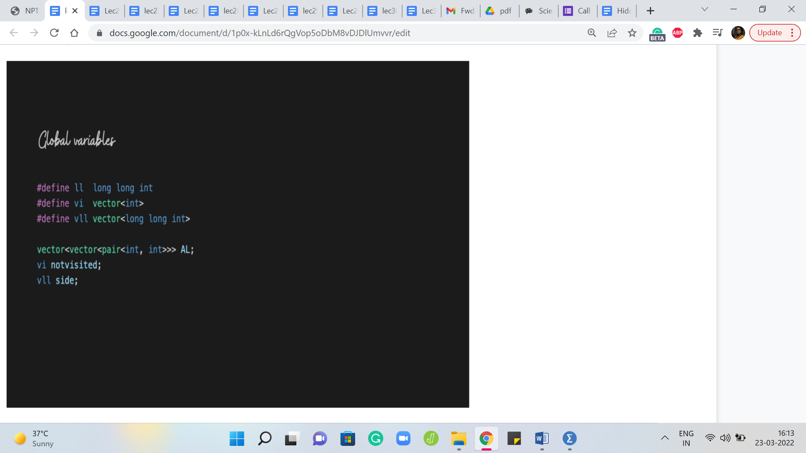
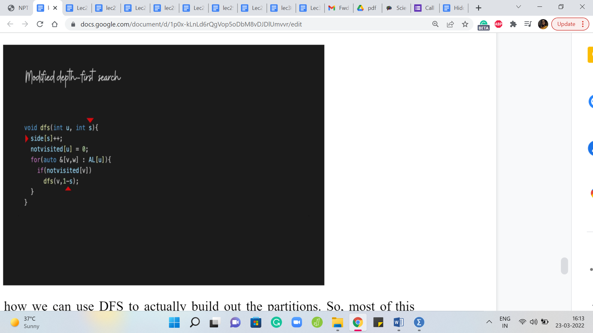

Graph Foundations - Module 2 (Mahmoud and Ehab and the
Lecture - 26
Graph Foundations - Module 2 (Mahmoud and Ehab and the bipartiteness)
(Refer Slide Time: 0:11)

Welcome back to the second module of the fifth week in Getting Started with Competitive Programming. So, this week our focus is on graph traversals, and specifically, we are looking at BFS and DFS. Just as a recap, let me point out that in the first module, we covered some pretty foundational material. We looked at how to represent graphs. We compared the adjacency matrix and the adjacency list representations, which are two of the most commonly used representations when it comes to graphs, and then we actually went through implementation for both BFS and DFS. And we looked at their complexities based on whether you were using a matrix representation or a list representation.
So, all of that has been done and dusted in the first module for this week. So, hopefully, you are here because you have either already finished watching those videos or because you know all of this already. If this is not the case, then you might want to do this first, before beginning to actually work on some of these problems.
Also, although for most problems where BFS and DFS are applied, you can actually usually use either approach and make things work. There are certainly applications where the problem is better suited to one traversal over the other. So, really make sure that you are comfortable with both of these algorithms because you never know which one will come in handy and which one will be the more natural approach to use, and in some cases, which one would be the only approach that actually works.
So, with all of that said, let us begin by looking at our first problem here, which if I am pronouncing it right, is called ‘Mahmoud and Ehab and the Bipartiteness.’ So, this was from a Codeforces contest, contest number 435. It was the second problem and I think all of the problem statements involve stories around these two characters.
For this problem, however, the story plays a negligible role. So, let us just get straight to the problem statement, where we are basically hit with a few definitions. So, let us go through them one by one.
(Refer Slide Time: 02:12)

So, first, we are told that a tree is a connected acyclic graph. Now the notion of a tree may already be a familiar one. You have certainly worked with trees in data structures. In the context of graphs, a tree is exactly what is being said here. It is a graph, which is connected and that does not have any cycles. So, just to be sure, let us discuss these terms a little bit.
First, what does it mean for a graph to be connected? Intuitively, it means that every vertex in this graph is reachable from any other vertex. So, imagining that your graph is some sort of a road network, the idea is that you should be able to walk around freely in this graph, as long as you are walking along edges. So, that is a constraint. You cannot jump from one vertex to another one that is not adjacent to it. That does not have a direct edge to it.
But that does not mean that you cannot reach it, you can walk around and probably take a longer sequence of edges to get to this other vertex. So, two vertices that have a direct edge between them are adjacent. But for them to be connected, all we need is that there is a sequence of vertices that you can follow where the consecutive vertices are adjacent. They are connected by a direct edge and you can just walk around to get to this other vertex.
(Refer Slide Time: 03:31)

So, this sort of sequence is called a path. So, you can use a path to travel around in this graph and a graph is connected if you have such a path between any pair of vertices. So, you could come up with examples of graphs that are not connected. So, for example, if you draw on a piece of paper, let us say two triangles, for instance, which are disjoint from each other, then notice that there is no way for you to start from one triangle and end up in the other one.
Once you are in one of these triangles, you are kind of trapped to travel only within that triangle. So, it is easy to come up with examples of graphs that are not connected, and notice that you can use graph traversals to figure out if a graph is connected or not. Because one run of either BFS or DFS will essentially visit every vertex that is reachable from the vertex that you start the traversal from.
So, just by checking at the very end if every vertex is visited or not, you know if your graph is connected or not. In fact, if your graph is not connected, then the graph is essentially a collection of connected pieces, which are called connected components and you can even use these graph traversal algorithms, either BFS or DFS, to figure out how many of these pieces there are.
So, this is a fun exercise and there is a problem listed in the extra section which will allow you to practice just counting the number of connected components in a graph. So, while on the topic of connectivity, I just felt like I should mention that. But now let us move on to talking about cycles.
(Refer Slide Time: 05:10)
 

So, a cycle is simply a path with its ends also connected by a direct edge and what we are given is that our graph does not have cycles. So, remember we are talking about trees.
So, trees are connected acyclic graphs and we were just making sure that both of those terms make sense. Now, the second definition that we have to contend with is this concept of a bipartite graph. So, a bipartite graph is a graph whose vertex set can be partitioned into two parts such that every edge essentially goes across. So, you pick any edge in the graph, it has one of its endpoints in the first part and the other endpoint in the second part.
(Refer Slide Time: 05:52)


So, bipartite graphs are typically visualized in this way. You can essentially split the vertex set into some sort of a left part and a right part and you see that all of the edges are going across.
Here is an example of what is called a complete bipartite graph, which basically means that you have the two parts and you have all possible edges between these two parts. Now, let us say that the two parts of a bipartite graph have ‘a’ and ‘b’ many vertices. So, let us say that small a denotes the number of vertices in one of the parts and small b denotes the number of vertices in the other part. What is the maximum number of edges that your bipartite graph can have?
So this example here should give you a clue. But this is essentially a counting question and one that will be relevant to our solving this problem. So, please feel free to pause the video here and think about what would be an answer to this question. Alright. Hopefully, you had a chance to think about this for a bit.
In this example, you can see that we have a bipartite graph where the paths have 5 and 3 vertices, and if you were to just count the number of edges, you will see that there are 15 edges, which happens to be 5 x 3 and one of the ways of seeing that it is indeed 5 x 3 for a good reason is to isolate the edges incident on each vertex on one of the sides.
So, let us look at it from the perspective of the red vertices. You would see that each of the red vertices has three blue neighbors and this is going to be true in general for any complete bipartite graph with parts that have a and b vertices. So, each of the ‘a vertices’ will have ‘b neighbors,’ which means that the total number of edges is going to be simply the product of the sizes of the two parts, ‘a’ x ‘b.’ So, let us just keep that fact at the back of our minds, and now let us go back to the problem statement.
(Refer slide Time: 07:51)

So here, what we are told is that we are given a tree consisting of ‘n’ nodes and we have been asked to add edges to it in such a way that the graph remains bipartite. Notice that the phrase is that the graph is still bipartite, which implicitly tells you that a tree, to begin with, is already bipartite.
Now, I think this is a really fun fact to try and prove for yourself, especially if you are not already familiar with it and I will not prove it here because the proof is kind of implicit in the algorithm that we will come up with to solve the problem. So, I do not want to give it away completely immediately. But I will leave you with three hints for trying to prove that all trees are bipartite and I hope that you have some fun with this.
(Refer Slide Time: 08:39 & 09:31)


So, one way of showing this is to use induction on the number of vertices and a hint in this context is to use the fact that every tree has a leaf. Now that of course sounds like a perfectly reasonable statement in English. But it is also true of graph-theoretic trees. So, a leaf is simply a vertex, which has exactly one neighbor, and if you do not know this already, you can show this by induction as well.
So, having proved that every tree has at least one leaf, as long as it has at least two vertices, this is always true, you can actually try and see what happens if you remove the leaf in the induction step of, you know, the statement that every tree is bipartite. It is typically going to be easy to sneak a leaf back in, as you perform the induction step. So, that is the first hint.
The second one is to essentially use this famous characterization of bipartite graphs. So, it is well known that a graph is bipartite if and only if it does not have any odd cycles, which are cycles with an odd number of vertices in them. Now of course, here it is easy to put 2 and 2 together.
A tree not only does not have odd cycles – it does not have any cycles. So, if you knew this categorization, it is just a direct application. But in case you do not know this characterization, I would welcome you to try and actually prove this characterization because this will imply what you want. And once again, think about whether you can use a breadth-first search traversal to actually prove this statement here. So, that would be the second approach.
(Refer Slide Time: 10:17)

The third approach will be to actually demonstrate an explicit bipartition. So, you could fix your favorite vertex in this graph, and on the one side, you could collect everything that is at an even distance from this vertex. So, what is the notion of distance in the context of graphs? Well, the distance between any two vertices would be the length of the shortest path that joins them.
So, for instance, your immediate neighbors would be at distance 1, the neighbors of your neighbors would be a distance 2, and so on. Importantly, we are working with unweighted graphs here. So, every edge is just going to contribute 1 unit to the distance calculation.
So, if we just collect every vertex, which is at an even distance from a fixed vertex and every vertex which is at an odd distance from the fixed vertex with the fixed vertex landing on the even side because it is a distance 0 from itself, so this will turn out to be, at least for trees, a valid bipartition in that every edge will go across. And you want to think about why this is the case and again, if you like, you can use a traversal to help navigate this argument.
So, use any of these three approaches and see if you can convince yourself that trees are bipartite. Of course, it also helps as a warm-up to just play around with some examples to build your intuition first. So, once you have done that, you can come back and continue the discussion that we are going to have here, which is again, back to the problem statement. What is our task here? Our task here is to essentially add as many edges as we can while maintaining the bipartiteness of the tree.
We are also supposed to maintain the fact that the graph is simple because notice that the question here is to add as many edges as possible. And if we were not constrained to work with a simple graph, at the end of the day, we could just keep adding as many edges as we want between a fixed pair of vertices and this would not make so much sense.
So, in a way, this is a good constraint for us that makes the problem nice and well defined. And now the question that we really have to think about is: What is the largest number of edges that we can add to a tree while still keeping it bipartite?
So, in some sense, we want a complete bipartite completion of the tree that we are given, and the reason I say that is because we have talked about complete bipartite graphs in an example earlier. Notice that a complete bipartite graph automatically maximizes the number of edges that we can have once the parts are fixed. So, what are the parts that we are working with?
(Refer Slide Time: 13:03)


Remember, we are given a tree as input and we just said that a tree is bipartite and hopefully you had a chance to convince yourself of this fact. So, let us look at the tree from the bipartite perspective. So, let us redraw this tree so that all the vertices in the left part are in this left circle here and all the vertices in the right part are in the right circle.
So, remember, given that trees are bipartite, you can come up with such a partition and you should also be able to convince yourself that up to swapping the left and the right parts, this partition is in fact unique. And that will be a fallout of the way that you proved that every tree is bipartite. So, again, if this is not completely clear that these parts are unambiguously defined, given a tree, then please take a moment here to actually absorb this fact and convince yourself of it.
So, now let us take a closer look at the bipartite representation of this tree. Our task here is basically going to be to fill out the gaps here. Notice that since we have to maintain the bipartiteness, we cannot add any edges with both of their endpoints on the left or with both of their endpoints on the right.
But any pair of vertices that is one on the left and the other on the right and does not already have an edge between them is fair game in terms of our being able to add that edge. So, let us just fill in the gaps here and you will see that these are all the missing edges that we can add to turn this bipartite graph into a complete bipartite graph.
Now, what is this number? And is this our answer? Well, this number is definitely our answer because notice that we cannot add any more edges here under the constraints that we have to maintain bipartiteness, and the final graph has to be a simple graph. So, we certainly cannot do better than this and on the other hand, what we are doing is certainly feasible.
So, what we have added here constitutes of valid solution in the sense that none of these new edges violate bipartiteness. We carefully introduced them so that they have one leg in one boat and the other leg in the other boat, they all go across. So, that is safe and we never added an edge on top of an existing edge. So, what we are left with at the end of the day is certainly a simple and bipartite graph. So, we have essentially argued the correctness of this approach.
I will say that it is easy to see the validity of this solution, the feasibility of this solution. To formally argue that this is the best that you can do, you do need a little bit of an argument to convince yourself that this partition is something that we are stuck with. We really just have to build on this, there was not a different way of partitioning the vertices so that this product of the sizes of the two paths could have possibly been higher, for instance.
That is not going to happen and this is the comment that we made earlier that once you are given a tree, there is really only a unique bipartition up to renaming the left and the right paths. So, if you convince yourself of that, then this is, you know, complete proof for why this approach is correct.
But in case that is something that you are still not sure about, then there is still a small gap in the argument for the correctness of what we are doing. So, make sure you understand why this partition is essentially unambiguous once a tree has been given to you. Alright. So, now that we know what we want to do, let us just look at what the final answer is going to be.
So, if the sizes of these parts that came out of the tree were small a and small b, then what do you think the answer would be? I am going to reveal it in 10 seconds. So, if you want to think about it, please pause the video here and come back when you are ready.
(Refer Slide Time: 17:11)

Alright. So, the answer is going to be ‘a’ x ‘b’ - ‘n’ - 1, where n - 1 is (essentially) all the edges that we already have. Remember, we are given a tree on n vertices. So, it is a well-known fact that any tree on n vertices has ‘n - 1’ edges. So, I am just taking advantage of that fact, to say n - 1 here. You could equally just say m, where m is the number of edges that you took in as input, it would be the same thing. And ‘a x b,’ if you remember from before, is the number of edges that we have after we add all of the missing edges in.
So, if the sizes of the two parts were a and b, we just argued a few minutes ago that the number of edges that we will have in the complete bipartite graph with part sizes a and b is exactly ‘a x b.’ So, that is the total number of edges that we get after doing the completion process and we just have to remember to subtract from this n - 1 to get to the number of edges that we actually added on top of what was there.
Alright. So, now that we know the answer, the only thing that remains to be done is to figure out a and b. What are the sizes of the two parts in the bipartite representation of the given tree? So how do we figure out this partition? If we can come up with an algorithm for doing this, this will essentially answer the two puzzles that we mentioned during this discussion.
The first one was to argue that trees are bipartite and the second one was where we said that this by partition is in fact unique. So, just think about this. If somebody gave you a graph and they told you that it was bipartite and they told you to come up with a partition, how would you go about it?
Well, you could start with your favorite vertex – could be anyone. And then you could say, look, so if this vertex goes on the left, it could also go on the right, it does not really matter. But to begin with, let us just say, we pick an arbitrary vertex and we just throw it in the left bundle. Right. Then we know that all of its neighbors, all the vertices that it is adjacent to, must, in fact, go on the other side. They must all be on the right.
So, we dump all of its neighbors on the right. Now we look at all the neighbors of the vertices that landed on the right, and then we know that they must be on the left because we cannot accommodate edges completely on the right-hand side. So, you just keep doing this dance, going back and forth between left and right, and what you will end up with is a partition. And in fact, it is even a valid bipartition.
And the reason for this is that well, you were promised that the graph is bipartite and at every step, you did whatever you were forced to do. You could not have partitioned it any other way. Otherwise, you would have had a violation and if in spite of all this, the partition that you end up with has edges on one part, on one side, then you can essentially use that edge to argue that your graph was not bipartite, to begin with.
And the intuitive reason for that is as we just said, at every step you did what you were forced to do. You could not have had the partition come out any other way and therefore, you could not possibly have edges within the paths because of the promise that the graph was bipartite, to begin with.
So, it would be a contradiction if you had a violation at the end and notice that this process will essentially end up exhausting all the vertices, because again, if it did not, then you can (sort of) argue that the graph was not connected, to begin with. So, any vertex that is not accounted for by this process that you just performed, is going to be a vertex that is not reachable from any of the vertices that you have partitioned so far.
But that would violate connectivity. So, you actually know that this process ends up coming up with a forced partition of all the vertices in the graph, which also is an argument for why the partition is unique, which is also something that we mentioned a few minutes ago. So, let us now just recap this whole process with an example.
(Refer Slide Time: 21:29)

Let us say that we were given this tree as input. We said that we will first fix a favorite vertex. Let us just pick the one on the top and then we said that, okay, we are going to designate this as a vertex on the left side of the partition. I am going to remember that by coloring it red and then we said that all of its neighbors go on the other side.
So, let us remember that by coloring the neighbors with a different color, in this case blue. And then we said that, well, we will go over all the vertices that we dumped on the other side, and we will find their neighbors and make sure that their neighbors come back to the left. So, we do that.
So, these are all of the neighbors in the next layer of the tree. And we color all of those red and finally, as you can imagine, the last layer is going to go back on the other side and will get colored blue. So, this is essentially our partition for this example. So, all the red vertices go on the left, for instance, and all the blue vertices go on the right.
Now the way this played out – this probably reminds you of a breadth-first search traversal. This is essentially what it is, as you alternate layers in a BFS traversal. It is like you could go back and forth between left and right and notice that all the red vertices and all the blue vertices are never going to have an edge between them.
Especially because we are working with a tree. Right. Notice that you cannot have level edges. Because if you have an edge at the same level, then that essentially means that you have a cycle. So, that is not possible, and other than level edges, let us say you have two blue vertices that are not on the same level, then they are separated by at least one layer of red vertices.
So, they are, you know, at least two levels apart in some sense and we already know that BFS trees do not have these packages. So, you could see that there is never going to be an edge between any pair of blue vertices. For two reasons. I mean, blue vertices from different levels because of the BFS structure and two blue vertices in the same level because of the tree structure, because the input graph is a tree. And of course, the same applies to the red vertices as well.
So, you could simply do a BFS traversal. Keep track of how many red vertices you encounter and how many blue vertices you encounter. Basically, just keep track of the total number of vertices in the odd layers and the total number of vertices in the even layers, and then you would be done. You just keep this count and then you output ‘a’ x ‘b’ - ‘n’ - 1.
Now what we are going to do in the next problem has a very similar flavor. So, let us do the implementation using DFS, just to see how you could do the same thing a little bit differently. We are going to pursue the same idea with the promise that the graph is bipartite. Essentially, whenever you are coming out of a vertex that is committed to being on the left or on the right, its neighbors just going to be on the opposite side.
So, that is all that you have to keep track of, as you try to do this using a DFS. If you are interested, you can code up this solution using BFS just as well and in fact, if you watch the next video, you might get some hints about how you could do that, even for this problem. But, for now, let us move on to the implementation using DFS.
(Refer Slide Time: 24:50 & 25:31)
 
So, to begin with, we have the standard global variables which are the adjacency lists and the not visited array, which helps us keep track of what has and what has not been visited yet. But we also have this variable called side, which could have well been to separate integers as well. But just for convenience, I am going to keep track of it as an array of length 2, where the first element of this array is going to tell us how many vertices have we built up on the left and the second element of this array is going to keep track of how many vertices have we accumulated on the right, as we build out our partitions.
Next, let us see how we can use DFS to actually build out the partitions. So, most of this should look familiar. This is the standard DFS code that we have already seen before. But now you might notice that there are a couple of important changes. First of all, the invocation itself takes an extra parameter called ‘s,’ and this sort of helps us keep track of whether we are on the left or on the right.
So, ‘s’ is going to be either 0 or 1 and the idea is that this tells us if the vertex ‘u’ was supposed to be on the left part. If it is 0, we take that to be left and if s is 1, then the vertex u is supposed to go to the right part. So, that is what this parameter is telling us. So, in fact, the first thing that we do is increment the value of ‘side of s’ appropriately.
Because basically, what is happening now is that we are visiting the vertex u for the first time, and the parameter s is telling us on which side it is. So, we put that on the record by incrementing the appropriate variable in the side array. And once that is done when we actually recurse and we find the first fresh neighbor of the vertex u that we are going to invoke the DFS on, that is the exploration that we are going to do recursively.
For this vertex, we have to remember to switch sides because remember this is a neighbor of a vertex that is on side s. So, this vertex itself has to go to side 1 - s. So, for example, if the vertex u was on side 0, then this neighbor of u, which is v that is going to be explored next should be on side 1, which is 1 - s or 1 - 0.
On the other hand, if u was on side 1, then v should be on side 0, but that is also 1 - s, in this case, that is going to be 1 - 1, which is 0. So, that is what is going to happen in recursion. So, you can see that as this plays out, for every vertex that you visit, notice that you are going to visit this vertex exactly once you correctly increment the appropriate side variable and you put on record how many vertices you have accumulated on both sides. By the time you are done, you will have the two sizes that you are looking for and you can just output that.
(Refer Slide Time: 27:54)

So, if you look at the last couple of lines of this code, that is really the key of the solution, you start your DFS at your favorite vertex – could be vertex 1 and it starts off inside 0 for instance – that is like we said, pick a favorite vertex and put it on the left. That is what we are doing here and once the DFS has run its course remember that given that this is a connected graph, which is also a tree, you will see that DFS is going to correctly visit every vertex and place it on the left or the right peacefully without any violations. And once again, remember that this would have been the only way to do it.
There would be really no other partition to contend with this one, which is why we know that what we output on the last line is actually the right answer. So, that is the product of the two sizes that we have of the two parts that we built out and we need to remember to adjust for the number of edges that were already there so, that what we are outputting is in fact, the number of extra edges that we added.
Alright. So, that brings us to the end of the discussion on this problem. If a lot of the notions that we saw here were already familiar to you, for instance, you already knew what a tree was, you already know what bipartite graphs are, perhaps you even know the characterization of bipartite graphs in terms of odd cycles and so on and so forth. Then, you may have honestly been a little bit bored and this I would say is, for somebody who already is familiar with many of these facts, I would say this would be a relatively straightforward problem.
On the other hand, if (many of) these notions were new to you, and you are seeing them for the first time, then I think it is perfectly natural that you need some time to absorb all the different ideas that you have been exposed to even in the discussion for just this one problem. So, please feel free to take your time and rewind and go back to any of the parts that did not make sense the first time around.
As always, if you are listening to this during an active run of this course we will look forward to hearing from you either on the Google mailing lists or on the Discord community forum. So, if you have any questions do drop in there or any suggestions, everything is welcome. You could also leave comments on this YouTube video and finally, this code is in C ++, as you can probably tell, and a link to it is in the description, as usual, this is on the official repository.
If you have a version of this in your favorite language, then please do submit it as a pull request and we will be very happy to incorporate it, so we look forward to hearing from you. Thanks very much for watching and I will see you back in the next video!